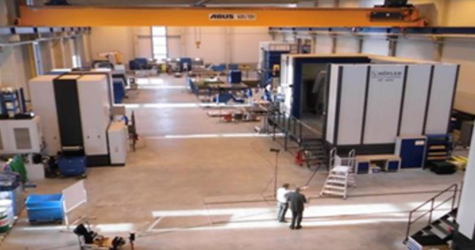

Технические возможности
Основным направлением ООО «ВАКОМА РУС» является проектирование и изготовление редукторной техники с целью интеграции инженерных разработок ВАКОМА в российские и международные модернизационные проекты в области нефтедобычи, нефтепереработки, химии, нефтехимии, энергетики и металлургии с предложением Заказчикам следующей основной номенклатуры приводных машин:
- Тяжелонагруженные цилиндрические редукторы мощностью до 5000 кВт;
- Редукторы экструдеров, экспеллеров, отжимных и сушильных машин;
- Высокоскоростные мультипликаторы (турборедукторы) для газотурбинных установок, дожимных компрессорных установок и турбодетандеров;
- Мультипликаторы нагнетателей и центробежных компрессоров;
- Мультипликаторы для горизонтальных насосных установок;
- Модернизированные редукторы для аппаратов воздушного охлаждения (АВО), станков-качалок и систем цепного привода;
- Аналоги редукторов и зубчатых пар отечественных
Изготовление оборудования ведется как на основании предоставленной конструкторской документации Заказчиком, а также по собственному инжинирингу на основании проведенных геометрических замеров действующего оборудования с сохранением посадочных мест и присоединительных размеров.
Полный цикл технологической цепочки изготовления оборудования и запасных частей бренда «ВАКОМА РУС» идет под контролем технических специалистов ВАКОМА с последующей сборкой и отгрузкой потребителю готовой продукции, имеющей российский сертификат происхождения, листы контрольных замеров готовых изделий, сертификаты на материалы, термообработку, протоколы балансировки и т.д. (в зависимости от предмета исполняемого контракта).
Основной отличительной особенностью редукторной техники ВАКОМА является применение качественных материалов для изготовления зубчатых зацеплений и специальная термическая и механическая обработка. Поставщиками заготовок для производства зубчатых передач ВАКОМА являются DEUTSCHE EDELSTAHLWERK, BGH Edelstahl Siegen GmbH (Германия) и SOCHOROVA VALCOVNA T.Z. (подразделение Moravia Steel, Чехия).
Машиностроительные партнеры нашей компании имеют все необходимое оборудование для производства высококачественной приводной техники, включая оборудование цементации зубьев, зубошлифовки и динамической балансировки валов, а квалификация специалистов нашего инженерно-технологического центра позволяет выполнять проектирование понижающих редукторов и высокоскоростных мультипликаторов с передаваемой мощностью до 30 МВт при скоростях вращения до 22 000 об/мин.
Примечание (конструктивные особенности приводной техники ВАКОМА):
- Материал изготовления зубчатых пар: усовершенствованные марки CrNiMo сплавов, имеюшие повышенные характеристики;
- Зубчатые зацепления подвержены высокоточной обработке, закалены, цементовано-шлифованы и динамически отбалансированы;
- Функционально важные места снабжены контрольно-измерительными приборами с цифровыми датчиками сигналов производства фирм Bently Nevada, JUMO серии Pt либо других производителей по согласованию с Заказчиком;
- Мультипликаторы комплектуются шестеренчатыми маслонасосами KRACHT;
- Применение подшипников от ведущих мировых производителей (SKF, FAG, Timken, MAIN METALL и др.).
| Парк машин на производственной площадке | |||||||||
|---|---|---|---|---|---|---|---|---|---|
| Производитель | Управление | Исполнение | Рабочий диапазон | Размеры стола | |||||
| X | Y | Z | Шпиндель | L x B (мм) | Макс. вес | ||||
| Сверлильно-расточной станок | |||||||||
| TOS Varnsdorf | SINUMERIK 840D | WRD 130 Q | 7000 мм | 3500 мм | 1700 мм | 34/46 кВт | H SK 100 | 3000х3500 | 30000 кг |
| Гоизонтальные токарные станки | Максимальный диаметр | Нагрузка | Расстояние между центрами | ||||||
| FAT TUR klein | Siemens 810D | FAT TUR 560х3000 |
560/300 мм | 10-180 мм | 800 кг | 3000 мм | 2500 кг; Люнета: 3000 кг |
||
| FAT TUR grob | Siemens 810D | FAT TUR 1150х6000 |
1150/700 мм | 1x 50-480 мм; 2x 380-700 мм |
2000 кг | 6000 мм | 9000 кг, Люнета 12000 кг/ 15000 кг |
||
| Карусельный станок | Максимальный диаметр | Максимальная высота | Диаметр стола |
Макс. вес |
|||||
| Toshulin | Siemens 840D | SKIQ 25 | 2900 мм | 1940 мм | 2500 мм | 2500 кг | |||
| Зубонарезная машина | Максимальный диаметр | Радиальное межосевое расстояние |
Заготовка | Модуль | Макс. вес |
||||
| Hofler | Siemens 840D | HF 4000 | 4000 мм | 105-2175 мм | Макс. диам. 2500 мм |
40+ | 45000 кг | ||
| Зубонарезная машина | Максимальный диаметр | Радиальное межосевое расстояние |
Диаметр люнеты |
Диаметр стола |
Макс. вес |
||||
| Hofler | Siemens 840D | HF 1600L | 1600 мм | 50-1000 мм | 200-600 мм | 1250 мм | 14000 кг | ||
| Hofler | Siemens 840D | HF 4000 | 4000 мм | 530-2110 мм | 2350 мм | 45000 кг | |||
| Зубонарезная машина | Диаметр концевика | Длина хода |
Макс. диаметр фрезы |
Макс. длина фрезы |
Модуль | ||||
| Hofler | Siemens 840D | HF 1600L | С10 32, 40, 60, 80 мм | 400 мм | 385 мм | 450 мм | 30+ | ||
| Hofler | Siemens 840D | HF 4000 | С10 40, 60, 80, 100 мм | 600 мм | 500 мм | 600 мм | 48+ | ||
| Зубошлифовальная машина | Макс. наружный диаметр | Наружный диаметр |
Высота профиля |
Макс. величина хода |
Макс. вес |
||||
| Hofler | Siemens 840D | Rapid 2500 | 2600 мм | мин. 100 мм | макс. 100 мм | 1500 мм | 25000 кг | ||
| Круглошлифовальный станок | Макс. наружная шлифовка (диаметр) |
Макс. длина |
Шлифовальн. круги (диаметр) |
Ширина Шлифовальн. круг |
Макс. вес Люнет |
||||
| TOS a. s. | Siemens 840D | BUC 85 | 850 | 4000 мм | 750 мм | 100 мм | 4000 кг | ||
| Машина для высокоточного измерения инструмента | Максимальный длина инструмента |
Максимальный диаметр инструмента |
Калибр скобы | ||||||
| Zoller | Venturion 800-pilot 3.0 CNC | 1600 мм | 50-1000 мм | 1250 мм | |||||
| Испытательный стенд | Передаточное отношение главного редуктора |
Мощность | Частота вращения |
Частота вращения на выходе |
|||||
| RPS 500 mit Spannfeld 8000х4000 mm | 4,6 - 200 | 500 кВт | 750 и 1500 об./мин. |
5-163 (на вых-ом валу) |
<12000 (на турбореж.) |
||||
| Моечный комплекс | Размеры | ||||||||
| Lutro | 7000х4000х4000 мм | ||||||||
| Лкакрасочная кабина | Размеры | ||||||||
| Lutro | 7000х4000х4000 мм | ||||||||
| Крановое оборудование | |||||||||
| Brukenkran | Производственный цех | 1 х 40т/10т; 1 х 20т/5т | |||||||
| Brukenkran | Сборочная площадка | 1 х 60т/10т; 1 х 20т/5т | |||||||
| Габариты цехов |  | ||||||||
| Монтажный цех: 79,8м х 17,9м = 1428,42м2 Производственный цех: 79,8м х 26,9м = 2146,62м2 Ворота производственного цеха (ШхВ): 6,00м х 5,00м Ворота монтажного цеха (ШхВ): 6,00м х 5,00м Высота крана: 8,02м |
|||||||||
| Прочие услуги | |||||||||
|
3D-измерения детали производятся с помощью лазерного трекера FARO Vantage и Leica Absolute Tracker. Все расчеты, разработка конструкторской и технической документации и анализ проивзодства ведет собственный конструкторский отдел приводов группы ВАКОМА РУС |
|||||||||
| Тип | Основные технические характеристики / Фото | ||||||||||
| Зубофрезерные станки | |||||||||||
| GLC 900 | 6-осевой зубофрезерный станок, работающий червячной фрезой. Максимальный модуль 30 мм на максимальном диаметре 3000 мм, и модуль 20 мм при максимальном диаметре 500 мм | ||||||||||
| GLC 2600R | |||||||||||
| MODUL WF-1250/1500 |
Горизонтальные зубофрезерные 6-осевые станки (конические передачи с прямыми тангенциальными и круговыми зубьями). Максимальный диаметр с поддержкой бабки: 2 000 мм; Максимальный диаметр без поддержки бабки: 1 500 мм; Максимальная ширина зубьев: 490 мм; Максимальный модуль: 22 мм; Двухместный цикл работы. |
||||||||||
| MODUL ZWFZ 1600 | |||||||||||
| MODUL ZWFZ 800/3 | |||||||||||
| MODUL ZWFZ 1250/14 II | |||||||||||
| CIMA CE 350 | |||||||||||
| CIMA P5 | |||||||||||
| PFAUTER RS1 |
Зубофрезерный станок с вертикальными осями заготовок. Для обработки заготовок по типу передач и валов, с самыми различными профилями и формами на цилиндрических заготовках, которые могут быть нарезаны. Диаметр заготовки номинальный - 400/500 мм; Максимальный модуль - 16 мм; Минимальный модуль - 0,5 мм; Число зубьев минимальное - 9; Максимальный угол наклона зуба - 10 / 30 / 45 / 60 *. |
||||||||||
| PFAUTER P400 FS/2 | |||||||||||
| Зубодолбежные станки | |||||||||||
| LORENZ SNJ5 |
Максимальный диаметр зубчатого колеса — 500 мм; Ширина колеса — 75 мм; Максимальный модуль — 6 мм; Минимальный модуль — 0,4 мм. |
||||||||||
| CLC |
Обрабатываются изделия различных размеров: диаметром 100-2000 мм при модулях до 30 мм на станках с вертикальной осью; диаметром до 500 мм при длине до 3000 мм на станкахс горизонтальной осью. |
||||||||||
| Фрезерный станок для спиральнозубых конических колес | |||||||||||
| KLINGELNBERG C60U |
6-осный станок с ЧПУ для высокоэффективного фрезерования конических зубчатых колес. Диаметр заготовки (макс.)- 600 мм; Диапазон нормальных модулей 2,4- 13 мм (непрерывное деление) / (единичное деление) Ширина зуба (макс.), - 100 мм; Регулируемый угол делительного конуса 0° — 90° Минимальное /максимальное передаточное отношение 1:1 /1:10 Минимальное /максимальное число зубьев 6 - 180; Нарезаемый угол спирали 0° — прим. 60 |
||||||||||
| Станок для конических шестерен с прямыми зубьями | |||||||||||
| GLEASON 12" |
Максимальный модуль — 9,5 мм; Максимальный диаметр — 600 мм. |
||||||||||
| Высокоточное фрезерование червячных шестерен | |||||||||||
| CLC500-H |
Горизонтальная обкатывающая фрезерная машина для валов больших размеров с числовым программным управлением. Агрегат горизонтальной металлообработки, связанной стяжелыми нагрузками, рассчитан на фрезерование деталей диаметром 500 мм. Максимальный модуль 30 мм. |
||||||||||
| Фрезерный станок для прямых и спиралевидных зубчатых реек | |||||||||||
| E.G.W. UZFL-V 300H |
Максимальный модуль — до 20 мм; Число оборотов шпинделя 40-200 об./мин. Наклон фрезерной головки влево — 45® |
||||||||||
| KESEL L93 - 2100 | |||||||||||
| Фрезерный станки | |||||||||||
| FRITZ-HECKERT ZFWG 250X3000 |
Фрезерные станки для нарезания шнековой резьбы Длина винтовой резьбы — до 3125 мм; Диаметр отверстия шпинделя — до 102 мм; Высота центров — до 260 мм; Максимальный модуль — до 10 мм; Оборот фрезы — 45—560 об/мин. |
||||||||||
| FRITZ-HECKERT ZFWG 250X2000 |
|||||||||||
| FRITZ-HECKERT ZFWG 250X2000 |
|||||||||||
| WANDERER |
Фрезерный станок для нарезания шнековой резьбы. Максимальный диаметр заготовки — 400 мм; Максимальная длина зажима — 2000 мм; Максимальный модуль — 8 мм; Диаметр отверстия шпинделя - 120 мм |
||||||||||
| PFAUTER P315 H | Зубофрезерный станок Максимальный модуль — 25 мм; Максимальный длина — 2000 мм. |
||||||||||
| Зубошлифовальные станки | |||||||||||
| OERLIKON MAAG OPAL 800 |
Шлифовальный станок для эвольвентного зубчатого колеса с ЧПУ и устройством.автоматической проверки на качество. Максимальный диаметр зубчатого колеса — 1 400 мм; Ширина колеса — 1200 мм; Максимальный модуль — 18 мм; Минимальный модуль — 1 мм; Максимальный угол наклона зуба — 45 * |
||||||||||
| OERLIKON MAAG OPAL 1200 |
|||||||||||
| NILES ZP15 |
Профильно-зубошлифовальные станки. Максимальный диаметр вершин зубьев — 2 000 мм; Максимальная глубина профиля — 75 мм; Максимальный модуль — 34 мм; Максимальный угол наклона зуба — +45* Максимальная длина хода при угле наклона зуба 0 * — 1 000 мм. Программно-управляемый механизм правки. Стационарное устройство правки с горизонтальным расположением шпинделя для правки и алмазным кругом. Движение правки создаётся одновременным движением каретки шлифовальной бабки вертикально за счёт перемещения оси подъёма и горизонтально за счёт перемещения тангенциальной оси в режиме интерполяции (расчёт траектории правки осуществляется системой ЧПУ). |
||||||||||
| NILES ZP20 | |||||||||||
| NILES ZE800 | |||||||||||
| KLINGELNBERG HNC 35 |
Червячно-резьбошлифовальный станок с 6-осевым управлением Bosch. Червячный вал с модулем 1 — 30 мм; Максимальная длина — 1 400 мм. |
||||||||||
| Шлицешлифовальный станок | |||||||||||
| FRITZ WERNER | Диаметр шлифования - 10-150 мм; длина устанавливаемой детали — 800 мм | ||||||||||
| Круглошлифовальный станок | |||||||||||
| FORTUNA | Шлифовальный станок для внутренних поверхностей с максимальным диаметром — 200 мм. | ||||||||||
| LODI | Максимальный диаметр — 800 мм, максимальная высота — 500 мм | ||||||||||
| MORARA | Для внутренних и наружных поверхностей с максимальным диаметром 400 мм, максимальной высотой 200 мм. | ||||||||||
| SCHAUDT | Диаметр максимальный — 360 мм, длина шлифования — до 1 600 мм. | ||||||||||
| Зубообрабатывающий станок | |||||||||||
| HEY | Округление зубчатых колес и снятие фаски. Максимальный модуль — 10 мм, максимальный диаметр — 600 мм | ||||||||||
| M.P.M. | Очистка поверхности и снятие заусенцев. | ||||||||||
| Шпоночно-долбежные станки | |||||||||||
| FROMAG RAPIDA D63 |
Округление зубчатых колес и снятие фаски. Максимальный модуль — 10 мм, максимальный диаметр — 600 мм | ||||||||||
| FROMAG RAPIDA D100 |
Очистка поверхности и снятие заусенцев. | ||||||||||
| M3 | Заточной станок. | ||||||||||
| Ленточно-отрезной станок | |||||||||||
| DAITO |
Максимальный диаметр вала (резка под 90 градусов): 330,2 мм Минимальная скорость ленточной пилы: 1,7 м/мин Максимальная скорость ленточной пилы: 13,3 м/мин |
||||||||||
| Токарные станки с ЧПУ типа CNC | |||||||||||
| PODAVANI CNC 180 |
Максимальный диаметр — 180 мм, максимальная длина — 1 000 мм | ||||||||||
| PODAVANI CNC 200 |
Максимальный диаметр — 400 мм, максимальная длина — 1 000 мм | ||||||||||
| PODAVANI CNC 300 |
Максимальный диаметр — 600 мм, максимальная длина — 1 500 мм | ||||||||||
| PODAVANI CNC 900 |
Максимальный диаметр — 1000 мм, максимальная длина — 2 500 мм | ||||||||||
| Токарный центр | |||||||||||
| PONTIGIA | Максимальный диаметр — 1 200 мм, длина — 1 500 мм | ||||||||||
| GRAZIOLI DANIA 250 | Максимальный диаметр — 500 мм | ||||||||||
| A.M.F. | Максимальный диаметр — 600 мм, длина — 2 000 мм | ||||||||||
| Вертикальный обрабатывающий центр | |||||||||||
| FAMUP MCX 650 |
Перемещение по координатам: Х — 650 мм, У — 450 мм, Z — 470 мм. Частота вращения шпинделя — 4 000 об/мин. Мощность шпинделя — 15 кВт. |
||||||||||
| Круглошлифовальный станок | |||||||||||
| CARL ZEISS | Трехмерный измерительный прибор для контроля зубчатых колес с внутренними и внешними зубьями (червячные, конические зубчатые передачи, либо прямо и spiroidal ). Максимальный диаметр — 600 мм | ||||||||||
| Приборы для проверки межосевых расстояний между центрами контактных зон. | |||||||||||
| MAAR | Портативный прибор для проверки шага и эвольвенты профиля передач | ||||||||||
| Equotip | Портативный твердомер. | ||||||||||